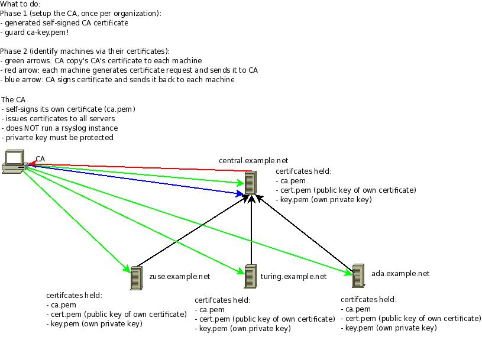

Encrypting Syslog Traffic with TLS (SSL)¶
Written by Rainer Gerhards (2008-07-03)
Overview¶
This document describes a secure way to set up rsyslog TLS. A secure logging environment requires more than just encrypting the transmission channel. This document provides one possible way to create such a secure system.
Rsyslog’s TLS authentication can be used very flexible and thus supports a wide range of security policies. This section tries to give some advise on a scenario that works well for many environments. However, it may not be suitable for you - please assess you security needs before using the recommendations below. Do not blame us if it doesn’t provide what you need ;)
Our policy offers these security benefits:
- syslog messages are encrypted while traveling on the wire
- the syslog sender authenticates to the syslog receiver; thus, the receiver knows who is talking to it
- the syslog receiver authenticates to the syslog sender; thus, the sender can check if it indeed is sending to the expected receiver
- the mutual authentication prevents man-in-the-middle attacks
Our secrity goals are achived via public/private key security. As such, it is vital that private keys are well protected and not accessible to third parties.
If private keys have become known to third parties, the system does not provide any security at all. Also, our solution bases on X.509 certificates and a (very limited) chain of trust. We have one instance (the CA) that issues all machine certificates. The machine certificate indentifies a particular machine. While in theory (and practice), there could be several “sub-CA” that issues machine certificates for a specific adminitrative domain, we do not include this in our “simple yet secure” setup. If you intend to use this, rsyslog supports it, but then you need to dig a bit more into the documentation (or use the forum to ask). In general, if you depart from our simple model, you should have good reasons for doing so and know quite well what you are doing - otherwise you may compromise your system security.
Please note that security never comes without effort. In the scenario described here, we have limited the effort as much as possible. What remains is some setup work for the central CA, the certificate setup for each machine as well as a few configuration commands that need to be applied to all of them. Proably the most important limiting factor in our setup is that all senders and receivers must support IETF’s syslog-transport-tls standard (which is not finalized yet). We use mandatory-to-implement technology, yet you may have trouble finding all required features in some implementations. More often, unfortunately, you will find that an implementation does not support the upcoming IETF standard at all - especially in the “early days” (starting May 2008) when rsyslog is the only implementation of said standard.
Fortunately, rsyslog supports almost every protocol that is out there in the syslog world. So in cases where transport-tls is not available on a sender, we recommend to use rsyslog as the initial relay. In that mode, the not-capabe sender sends to rsyslog via another protocol, which then relays the message via transport-tls to either another interim relay or the final destination (which, of course, must by transport-tls capable). In such a scenario, it is best to try see what the sender support. Maybe it is possible to use industry-standard plain tcp syslog with it. Often you can even combine it with stunnel, which then, too, enables a secure delivery to the first rsyslog relay. If all of that is not possible, you can (and often must...) resort to UDP. Even though this is now lossy and insecure, this is better than not having the ability to listen to that device at all. It may even be reasonale secure if the uncapable sender and the first rsyslog relay communicate via a private channel, e.g. a dedicated network link.
One final word of caution: transport-tls protects the connection between the sender and the receiver. It does not necessarily protect against attacks that are present in the message itself. Especially in a relay environment, the message may have been originated from a malicious system, which placed invalid hostnames and/or other content into it. If there is no provisioning against such things, these records may show up in the receivers’ repository. -transport-tls does not protect against this (but it may help, properly used). Keep in mind that syslog-transport-tls provides hop-by-hop security. It does not provide end-to-end security and it does not authenticate the message itself (just the last sender).
If you’d like to get all information very rapidly, the graphic below contains everything you need to know (from the certificate perspective) in a very condensed manner. It is no surprise if the graphic puzzles you. In this case, simply read on for full instructions.

Summary¶
If you followed the steps outlined in this documentation set, you now have
a reasonable (for most needs) secure setup for the following environment:

You have learned about the security decisions involved and which we made in this example. Be once again reminded that you must make sure yourself that whatever you do matches your security needs! There is no guarantee that what we generally find useful actually is. It may even be totally unsuitable for your environment.
In the example, we created a rsyslog certificate authority (CA). Guard the CA’s files. You need them whenever you need to create a new machine certificate. We also saw how to generate the machine certificates themselfs and distribute them to the individual machines. Also, you have found some configuration samples for a server, a client and a syslog relay. Hopefully, this will enable you to set up a similar system in many environments.
Please be warned that you defined some expiration dates for the certificates. After they are reached, the certificates are no longer valid and rsyslog will NOT accept them. At that point, syslog messages will no longer be transmitted (and rsyslogd will heavily begin to complain). So it is a good idea to make sure that you renew the certificates before they expire. Recording a reminder somewhere is probably a good idea.